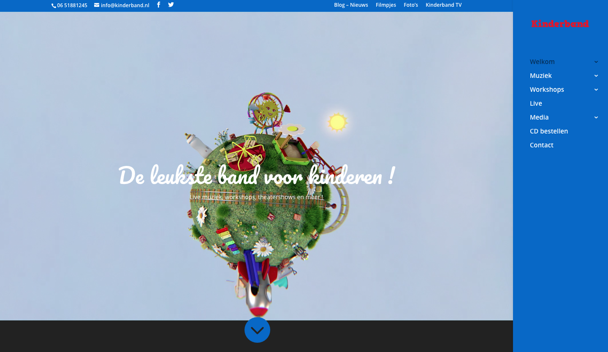
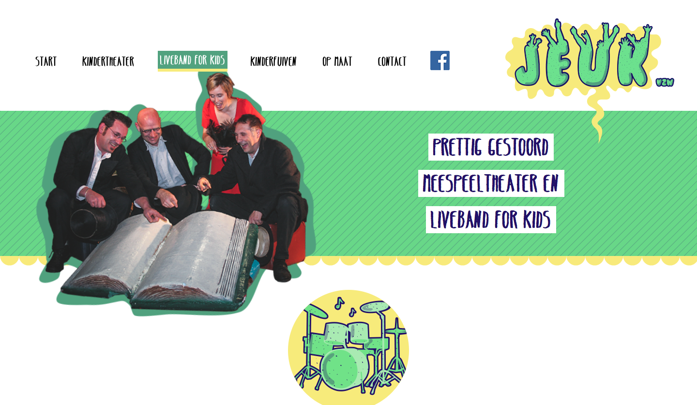
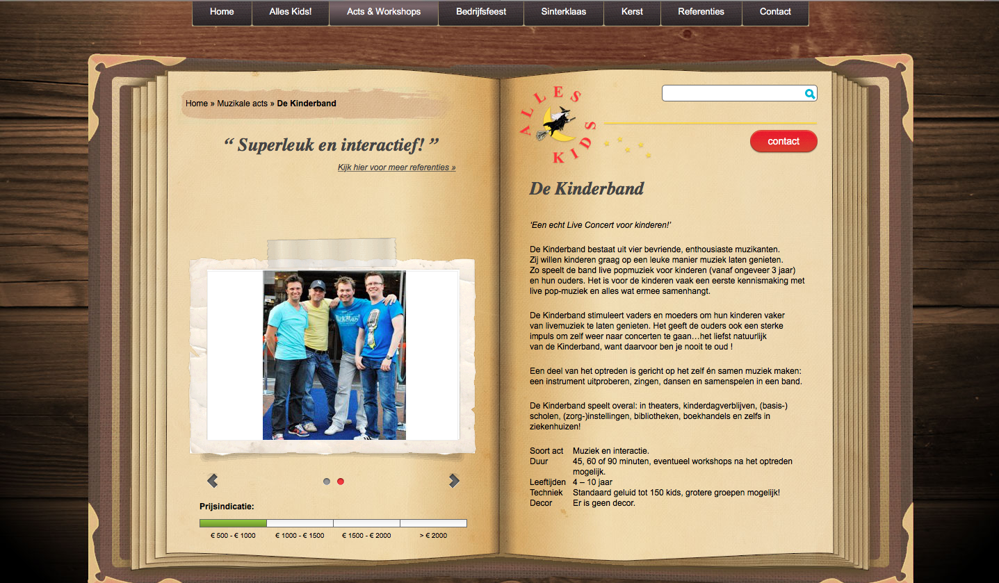

Concurrentie analyse
Kinderband
De website van Kinderband

Positief
- Duidelijke navigatie rechts die uitklapt
- Foto’s en filmpjes zijn makkelijk te vinden aan de hand van de bovenste navigatie
- Doorklikmogelijkheid naar facebook en twitter
- Veel informatie
Negatief
- Bij het bestelformulier staat alles chaotisch door elkaar
- Bij kinderband TV komt er geen banner te voorschijn
- De navigatiebalk werkt niet handig omdat het uitklapmenu snel weer verdwijnt
- Geen zoekfunctie
- Veel informatie waardoor het moeilijker wordt voor de kinderen
Jeukvzw
De website van Jeukvzw

Positief
- Duidelijke navigatie bovenaan
- Duidelijk contact
- Duidelijke website ook voor kinderen
- Downloadfiches setlist
Negatief
- Het adres is moeilijk terug te vinden
- Geen zoekfunctie
- Niet duidelijk waar je tickets kan bestellen voor de voorstelling
- Filmpjes zijn niet beschikbaar
Alleskids
De website van Alleskids

Positief
- Duidelijke navigatie met uitklapmenu
- Zoekfunctie
- Duidelijk contact
- Doorklik logo’s van facebook, twitter en blogs
Negatief
- Navigatie verspringt wanneer je navigeert
- Navigatie kan 3 keer uitklappen waardoor het een beetje voor chaos zorgt
- Geen bestel mogelijkheid